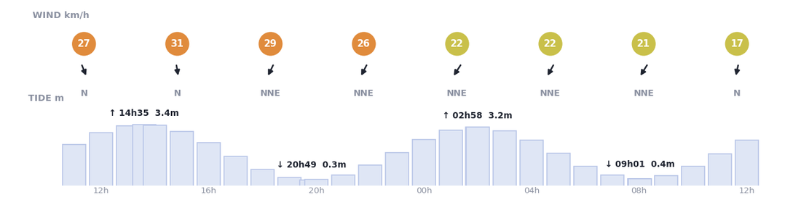
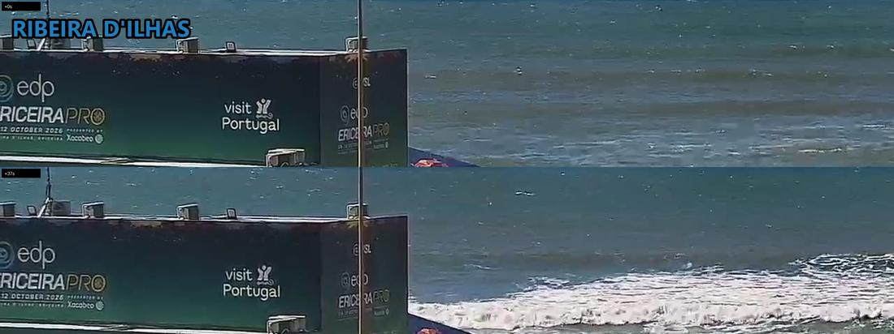
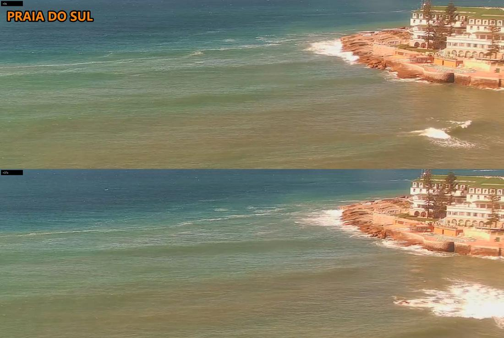
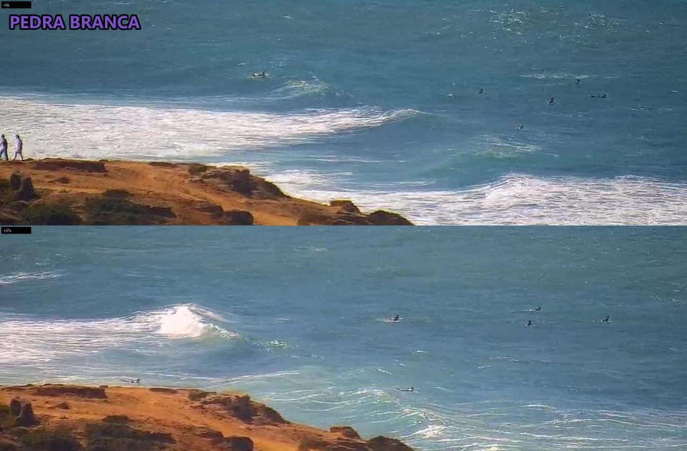
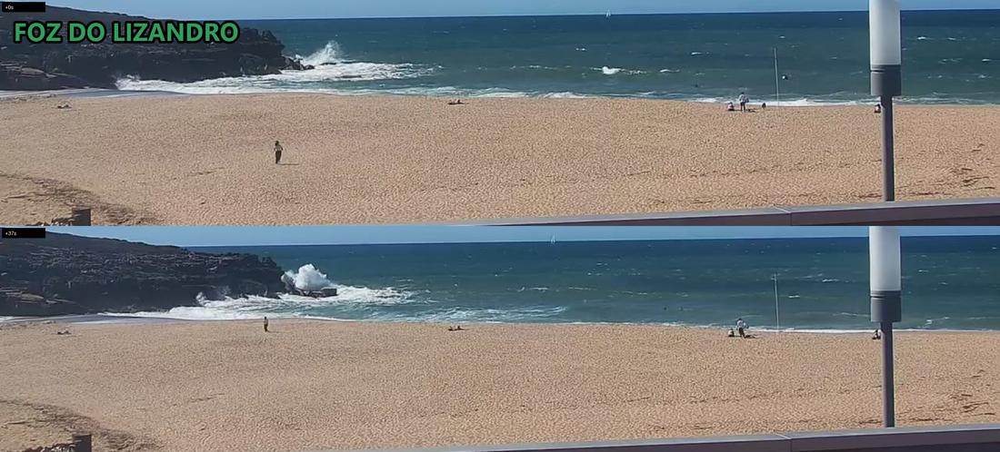

Fri 09 Oct · 13:40 · afternoon
Ribeira ★★★½☆ 0.6-0.9m ▪️ 🔹 ▫️
Norte ★★★☆☆ 0.9-1.2m ▪️ ▫️ 🔸
Sul ★★☆☆☆ 0.9-1.2m ▪️ 🔹 ▫️ 🔸
Pedra ★★★★☆ 0.6-1.1m ▪️ 🔹
Lizandro ★★½☆☆ 0.6-1.1m ▪️ 🔹 ▫️ 🔸
CAM · surfers out
Ribeira wind-textured +½★ ~2 out
Sul near-flat -1★ 0
Pedra reef peaks +1★ ~6 out
Lizandro closing out +½★ ~2 out
VERDICT
★★★★☆ Pedra. ~6 out and riding; Ribeira has dropped from 4 to 3½ stars since 10:40 as the N wind came in. Go now, do not plan an evening: wind holds 28-31 km/h N to dark and the forecast fades.
NEXT · 16:30
Wind peaks 31 km/h N around 16:00.
⭐️ Tomorrow · Sat 09:00-10:30 ★★★½☆ Ribeira · 0.3-0.6m · 19 km/h NNE offshore · low tide 📈 📅




0.6–0.9 m★★★½☆
2 surfers
small lines, wind-textured by the N cross-shore; ~2 out on the wide sheet (close-up two-thirds blocked by contest…
0.9–1.2 m★★★☆☆
surfers unclear
no cam frames this run, forecast only
0.9–1.2 m★★☆☆☆
0 surfers
near-flat at high tide, only surge on the rocks; nobody out on a clear detail crop
0.6–1.1 m★★★★☆
6 surfers
waist-high peaks breaking over the reef, wind-ruffled; ~6 sitting out back, one riding in the sheet
0.6–1.1 m★★½☆☆
2 surfers
wind-chopped, closing out near the rocks; ~2 in the water on the detail crop, approximate
| When | Ribeira | Norte | Sul | Pedra | Lizandro |
|---|---|---|---|---|---|
| 2026-10-09 13:40afternoon | FAIR2 | FAIR— | FAIR0 | FAIR6 | POOR-TO-FAIR2 |
| 2026-10-09 10:40lunch | FAIR3 | FAIR— | FAIR3 | FAIR3 | FAIR— |
| 2026-10-09 07:41sunrise | FAIR3 | FAIR— | FAIR2 | FAIR0 | FAIR0 |
| 2026-10-08 18:40dusk | FAIR18 | POOR— | POOR14 | POOR1 | POOR— |
| 2026-10-08 16:40sunset | FAIR— | VERY-POOR— | VERY-POOR0 | VERY-POOR1 | VERY-POOR0 |
| 2026-10-08 13:40afternoon | FAIR— | VERY-POOR— | VERY-POOR0 | VERY-POOR0 | VERY-POOR0 |
| 2026-10-08 10:40lunch | FAIR-TO-GOOD2 | POOR-TO-FAIR— | POOR-TO-FAIR10 | POOR-TO-FAIR— | POOR-TO-FAIR0 |
| 2026-10-08 07:41sunrise | FAIR-TO-GOOD2 | POOR-TO-FAIR— | POOR-TO-FAIR0 | POOR-TO-FAIR— | — |